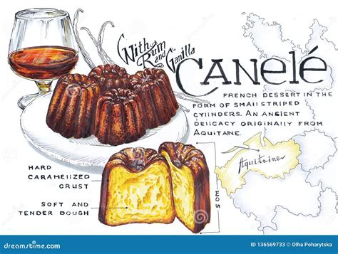

Histoire
Une histoire gourmande et mystérieuse
Le cannelé puise ses origines au XVIIIe siècle, dans les couvents bordelais. À cette époque, les vignerons bordelais utilisaient le blanc d'œuf pour clarifier le vin, laissant les jaunes inutilisés. Les religieuses les récupéraient pour confectionner des gâteaux simples, cuits dans de petits moules cannelés en cuivre : le cannelé était né.
Mais ce n’est qu’au XXe siècle que la recette est perfectionnée et que le nom "Canelé de Bordeaux" devient emblématique. C’est la maison Baillardran, dans les années 1980, qui remet la pâtisserie au goût du jour, avec une recette affinée et une cuisson maîtrisée à la seconde près.
Le cannelé est désormais protégé par une confrérie et bénéficie d’une reconnaissance internationale, tout en restant profondément enraciné dans la culture bordelaise.
